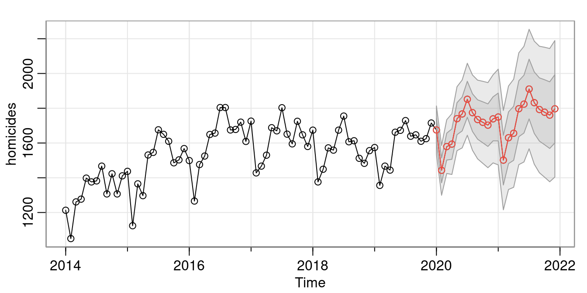

Visualization
Visualization and Exploration of the Gapminder Dataset Using ggplot/tidyverse Packages in R
View this project’s final report and source code.

The focus of this project was to explore the famous Gapminder dataset visually using ggplot graphs like the one above. I also used the other tidyverse packages like dplyr to manipulate the data in different ways to create well formatted data that fits into summary tables.
Time Series Analysis
Analysis of Homicides in the US Over Time Using R and an ARMA/SARIMA Model
View this project’s final report and source
code.

This project was based around forecasting methods. I find overall trends, monthly seasonality, and fit ARIMA and SARIMA models. I compare the two model’s performance as well as fit. I then forecasted homicides for the next 24 months.
Regression Analysis
Reproducing the Results and Logistic Regression Model of a study on Modeling Prison Sentencing From Facial Features
View this project’s final report and source code.

The idea for this assignment was to gain experience and become more comfortable reading and interpreting scientific research papers. We also learned the importance of reproducibility and transparency. My group was tasked with reproducing the results and models from this paper and reporting on them. I was in charge of the modeling as well as the table for the models, both of which are created with the source code I linked. The picture above is a replication of the table used in the original paper. Interestingly, we ended up finding a small mistake in the paper.
Machine Learning
Predicting Ebay Car Prices Using a Random Forest Model in R
View this project’s final report, source code for the random forest model, and source code for cleaning the data.
This was a group project. I handled the random forest model as well as the data cleaning. We each tried a model and compared results. The random forest model came out on top based on testing MSE. I had to learn a lot about resource allocation to complete this project. The dataset had 180k rows and 10+ possible predictors. I quickly found out that I would not be able to easily tune and train the model. The training process ended up taking a few days with cross-validation on less than half of the full dataset. I had to weigh run time vs accuracy and pick model parameters early on in the training process.
Fitting a Bayesian Hierarchical Model on Fake Flu Data. Simulated with an MCMC algorithm using R and Rjags/jags.
View this project’s final report, report source code, and model fitting source code
The setup for this project:
“There are two tests for influenza strain K9C9. The data collected consists of 10 countries and 100 pairs of
test results. The more accurate of the tests will be assumed fact. The less accurate test, EZK, is the area
of
interest for this project. A Bayesian hierarchical model will be fit and it will be simulated with an MCMC
algorithm using R/jags.”
I fit the model, assessed fit, and interpreted the results in the context of a global pandemic.